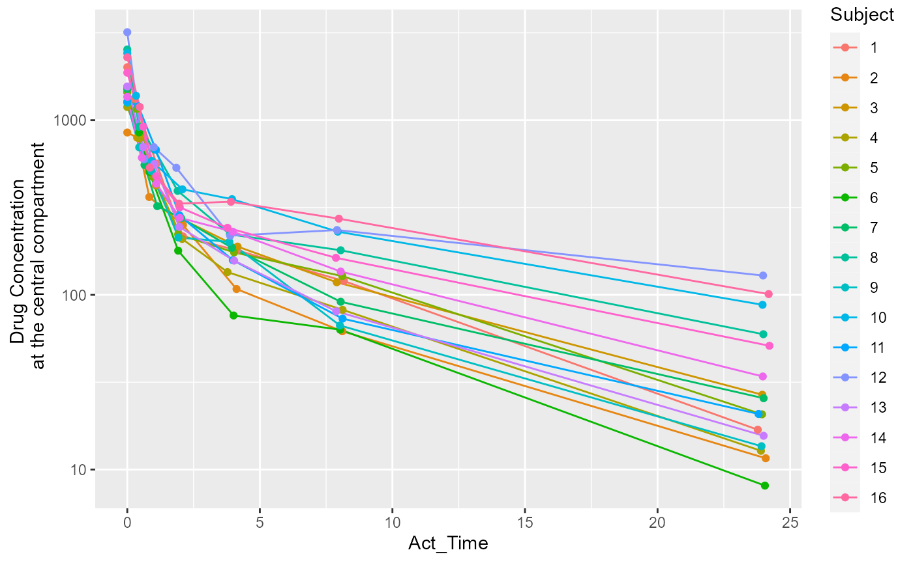
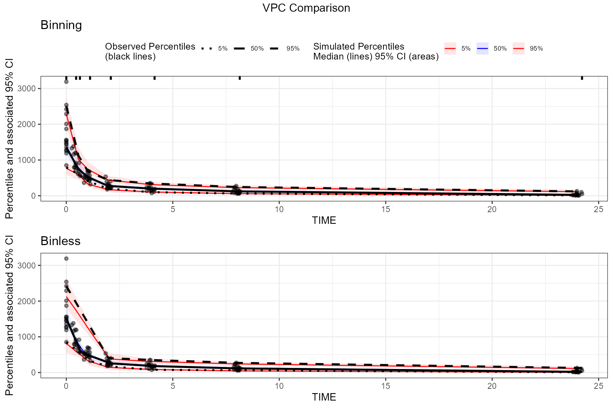

tidyvpc and the Certara.RsNLME package
integrate well together for a robust pharmacometric workflow. Build and
estimate your model using RsNLME and
easily pass the observed and simulated output data.frame to
tidyvpc for creating visual predictive checks (VPCs). The
below steps provide an example workflow when using the
tidyvpc and Certara.RsNLME package
together.
First, you must install the Certara.RsNLME package.
Complete installation instructions can be found here.
Let’s take a quick look at the time-concentration profile of our
input dataset. We will be using the pkData
data.frame from the Certara.RsNLME
package.
conc_data <- Certara.RsNLME::pkData
conc_data$Subject <- as.factor(conc_data$Subject)
ggplot(conc_data, aes(x = Act_Time, y = Conc, group = Subject, color = Subject)) +
scale_y_log10() +
geom_line() +
geom_point() +
ylab("Drug Concentration \n at the central compartment")
The above plot suggests that a two-compartment model with IV bolus is
a good starting point. Next, we will define the model using the
numCompartments argument inside the function
pkmodel() from the Certara.RsNLME package, and
provide additional ‘column mapping’ arguments, which correspond to
required model variables mapped to column names in the
conc_data data.frame.
We will then pipe in additional functions to remove the random effect
from V2, update initial estimates for fixed and random
effects, then change our error model.
model <- pkmodel(
numCompartments = 2,
data = conc_data,
ID = "Subject",
Time = "Act_Time",
A1 = "Amount",
CObs = "Conc",
modelName = "Two-Cmpt") %>%
structuralParameter(paramName = "V2", hasRandomEffect = FALSE) %>%
fixedEffect(effect = c("tvV", "tvCl", "tvV2", "tvCl2"),
value = c(15, 5, 40, 15)) %>%
randomEffect(effect = c("nV", "nCl", "nCl2"),
value = rep(0.1, 3)) %>%
residualError(predName = "C", SD = 0.2)
print(model)
#>
#> Model Overview
#> -------------------------------------------
#> Model Name : Two-Cmpt
#> Working Directory : C:/Users/jcraig/Documents/GitHub/tidyvpc/vignettes/Two-Cmpt
#> Is population : TRUE
#> Model Type : PK
#>
#> PK
#> -------------------------------------------
#> Parameterization : Clearance
#> Absorption : Intravenous
#> Num Compartments : 2
#> Dose Tlag? : FALSE
#> Elimination Comp ?: FALSE
#> Infusion Allowed ?: FALSE
#> Sequential : FALSE
#> Freeze PK : FALSE
#>
#> PML
#> -------------------------------------------
#> test(){
#> cfMicro(A1,Cl/V, Cl2/V, Cl2/V2)
#> dosepoint(A1)
#> C = A1 / V
#> error(CEps=0.2)
#> observe(CObs=C * ( 1 + CEps))
#> stparm(V = tvV * exp(nV))
#> stparm(Cl = tvCl * exp(nCl))
#> stparm(V2 = tvV2)
#> stparm(Cl2 = tvCl2 * exp(nCl2))
#> fixef( tvV = c(,15,))
#> fixef( tvCl = c(,5,))
#> fixef( tvV2 = c(,40,))
#> fixef( tvCl2 = c(,15,))
#> ranef(diag(nV,nCl,nCl2) = c(0.1,0.1,0.1))
#> }
#>
#> Structural Parameters
#> -------------------------------------------
#> V Cl V2 Cl2
#> -------------------------------------------
#> Observations:
#> Observation Name : CObs
#> Effect Name : C
#> Epsilon Name : CEps
#> Epsilon Type : Multiplicative
#> Epsilon frozen : FALSE
#> is BQL : FALSE
#> -------------------------------------------
#> Column Mappings
#> -------------------------------------------
#> Model Variable Name : Data Column name
#> id : Subject
#> time : Act_Time
#> A1 : Amount
#> CObs : ConcNow that we have fit the model, we can create a new model with updated parameter estimates and perform our VPC simulation run.
vpc_model <- copyModel(model, acceptAllEffects = TRUE, modelName = "Two-Cmpt-VPC")
print(vpc_model)
#>
#> Model Overview
#> -------------------------------------------
#> Model Name : Two-Cmpt-VPC
#> Working Directory : C:/Users/jcraig/Documents/GitHub/tidyvpc/vignettes/Two-Cmpt-VPC
#> Is population : TRUE
#> Model Type : PK
#>
#> PK
#> -------------------------------------------
#> Parameterization : Clearance
#> Absorption : Intravenous
#> Num Compartments : 2
#> Dose Tlag? : FALSE
#> Elimination Comp ?: FALSE
#> Infusion Allowed ?: FALSE
#> Sequential : FALSE
#> Freeze PK : FALSE
#>
#> PML
#> -------------------------------------------
#> test(){
#> cfMicro(A1,Cl/V, Cl2/V, Cl2/V2)
#> dosepoint(A1)
#> C = A1 / V
#> error(CEps=0.161251376509829)
#> observe(CObs=C * ( 1 + CEps))
#> stparm(V = tvV * exp(nV))
#> stparm(Cl = tvCl * exp(nCl))
#> stparm(V2 = tvV2)
#> stparm(Cl2 = tvCl2 * exp(nCl2))
#> fixef( tvV = c(,15.3977961716836,))
#> fixef( tvCl = c(,6.61266919198735,))
#> fixef( tvV2 = c(,41.2018786759217,))
#> fixef( tvCl2 = c(,14.0301337530406,))
#> ranef(diag(nV,nCl,nCl2) = c(0.069404827604399,0.182196897237991,0.0427782148473702))
#>
#> }
#>
#> Structural Parameters
#> -------------------------------------------
#> V Cl V2 Cl2
#> -------------------------------------------
#> Observations:
#> Observation Name : CObs
#> Effect Name : C
#> Epsilon Name : CEps
#> Epsilon Type : Multiplicative
#> Epsilon frozen : FALSE
#> is BQL : FALSE
#> -------------------------------------------
#> Column Mappings
#> -------------------------------------------
#> Model Variable Name : Data Column name
#> id : Subject
#> time : Act_Time
#> A1 : Amount
#> CObs : ConcNext, we will use the vpcmodel() function to perform
simulation and generate the required observed and simulated input
data.frame for tidyvpc.
fit_vpc_sim <- vpcmodel(vpc_model)The resulting observed and simulated data can be found in the
returned values from the vpcmodel() function e.g.,
obs_data <- fit_vpc_sim$predcheck0
sim_data <- fit_vpc_sim$predoutThe x and y arguments to
observed() are the columns from
fit_vpc_sim$predcheck0 The x and
y arguments to simulated() from
fit_vpc_sim$predout. By default, x column is
named IVAR and y column is named
DV in the output tables generated from
vpcmodel().
# Create a binless VPC plot
binless_vpc <- observed(obs_data, x = IVAR, yobs = DV) %>%
simulated(sim_data, ysim = DV) %>%
binless() %>%
vpcstats()
plot_binless_vpc <- plot(binless_vpc, legend.position = "none") +
ggplot2::ggtitle("Binless")
# Create a binning VPC plot with binning method set to be "jenks"
binned_vpc <- observed(obs_data, x = IVAR, yobs = DV) %>%
simulated(sim_data, ysim = DV) %>%
binning(bin = "jenks") %>%
vpcstats()
plot_binned_vpc <- plot(binned_vpc) +
ggplot2::ggtitle("Binning")
## Put these two plots side-by-side
egg::ggarrange(plot_binned_vpc,
plot_binless_vpc,
nrow = 2, ncol = 1,
top = "VPC Comparison"
)